Shakshat Virtual Lab 
INDIAN INSTITUTE OF TECHNOLOGY GUWAHATI
Sampling and signal reconstruction


♦ Nyquist sampling theorem
♦ Aliasing
♦ Sampling of non-bandlimited signal (anti-aliasing filter)
♦ Signal reconstruction
♦ Zero-order hold
♦ First-order hold
♦ The discrete Fourier transform
♦ Picket-fence effect
♦ Zero padding
♦ Properties of discrete Fourier transform
-- ♦ -- ♦ -- ♦ -- ♦ -- ♦ -- ♦ -- ♦ -- ♦ -- ♦ -- ♦ -- ♦ -- ♦ -- ♦ -- ♦ -- ♦ -- ♦ -- ♦ -- ♦ -- ♦ -- ♦ -- ♦ -- ♦ -- ♦ -- ♦ -- ♦ -- ♦ -- ♦ -- ♦ -- ♦ -- ♦ -- ♦ --
Sampling:
A continuous time signal can be processed by processing its samples through a discrete time system. For reconstructing the continuous time signal from its discrete time samples without any error, the signal should be sampled at a sufficient rate that is determined by the sampling theorem.
If a signal is band limited and its samples are taken at sufficient rate then those samples uniquely specify the signal and the signal can be reconstructed from those samples. The condition in which this is possible is known as Nyquist sampling theorem and is derived below.
A real signal whose spectrum is bandlimited to D Hz [X(f) = 0 for | f |>D] can be reconstructed from its samples taken uniformly at a rate fs > 2D samples/sec. We can say the minimum sampling frequency is fs=2D Hz.
Consider a signal x(t) as shown in Fig.1 and its spectrum is shown in Fig.2 which is noted to be bandlimited to D=1 Hz . Sampling x(t) at a rate of fs Hz, (means fs samples/sec) can be mathematically represented as multiplying x(t) by an impulse train  consisting of unit impulses repeating periodically every T seconds, where T= 1/ fs. The resulting sampled signal x'(t) is shown in Fig. 3. The spectrum of the sampled signal is shown in Fig. 4.
consisting of unit impulses repeating periodically every T seconds, where T= 1/ fs. The resulting sampled signal x'(t) is shown in Fig. 3. The spectrum of the sampled signal is shown in Fig. 4.
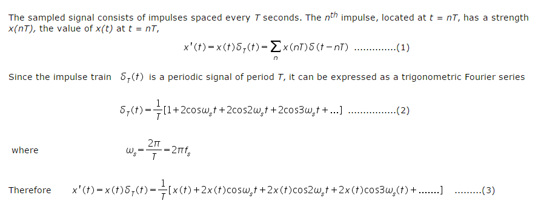
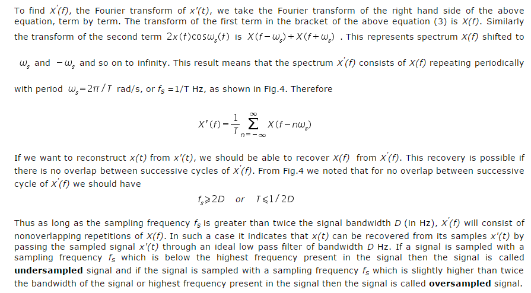
In reconstructing a signal from its samples, there is another practical difficulty. The sampling theorem was proved on the assumption that the signal x(t) is bandlimited. All practical signals are time limited, i.e., they are of finite duration. As a signal cannot be timelimited and bandlimited simultaneously. Thus, if a signal is timelimited, it cannot be bandlimited and vice versa (but it can be simultaneously non timelimited and non bandlimited). Clearly it can be said that all practical signals which are necessaily timelimited, are non bandlimited, they have infinite bandwidth and the spectrum X'(f) consists of overlapping cycles of X(f) repeating every fs Hz (sampling frequency). Because of infinite bandwidth, the spectral overlap will always be present regardless of what ever may be the sampling rate chosen. Because of the overlapping tails, X'(f) has not complete information about X(f) and it is not possible, even theoretically to recover x(t) from the sampled signal x'(t). If the sampled signal is passed through an ideal lowpass filter, the output is not X(f) but a version of X(f) distorted as a result of some causes:
-
The loss of the tail of X(f) beyond |f | > fs/2 Hz.
-
The reappearance of this tail inverted or folded onto the spectrum. The spectra cross at frequency fs/2 = 1/2T Hz. This frequency is called the folding frequency. The spectrum folds onto itself at the folding frequency. For instance, a component of frequency (fs/2)+ fx shows up as or act like a component of lower frequency (fs/2)- fx in the reconstructed signal. Thus the components of frequencies above fs/2 reappear as components of frequencies below fs/2. This tail inversion is known as spectral folding or aliasing which is shown in Fig. 5. In this process of aliasing not only we are losing all the components of frequencies above fs/2 Hz, but these very components reappear as lower frequency components. This reappearance destroys the integrity of the lower frequency components.
| 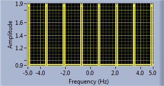 |
| Fig.5 Aliased signal |
Sampling of Non-bandlimited Signal: Anti-aliasing Filter
Anti aliasing filter is a filter which is used before a signal sampler, to restrict the bandwidth of a signal to approximately satisfy the sampling theorem. The potential defectors are all the frequency components beyond fs/2 Hz. We should have to eliminate these components from x(t) before sampling x(t). As a result of this we lose only the components beyond the folding frequency fs/2 Hz. These frequency components cannot reappear to corrupt the components with frequencies below the folding frequency. This suppression of higher frequencies can be accomplished by an ideal filter of bandwidth fs/2 Hz. This filter is called the anti-aliasing filter. The anti aliasing operation must be performed before the signal is sampled. The anti aliasing filter, being an ideal filter is unrealizable. In practice, we use a steep cutoff filter, which leaves a sharply attenuated residual spectrum beyond the folding frequency fs/2.
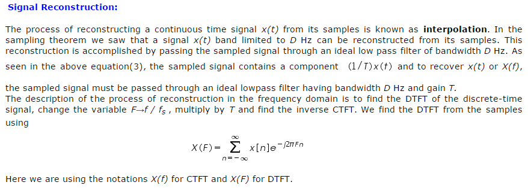 .
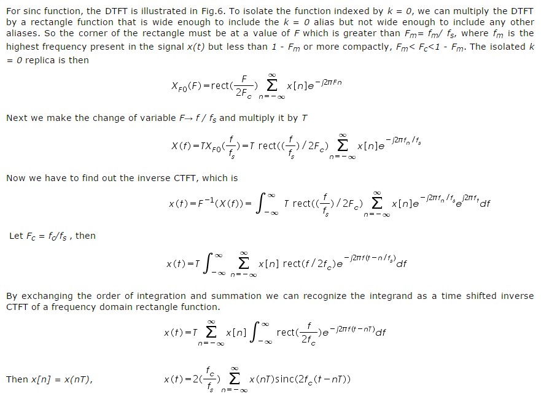
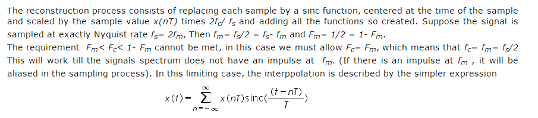
Interpolation consists of simply of multiplying each sinc function by its corresponding sample value and then adding all the scaled and shifted sinc functions.
The interpolated value at any point is the sum of contributions from infinitely many weighted sinc functions.
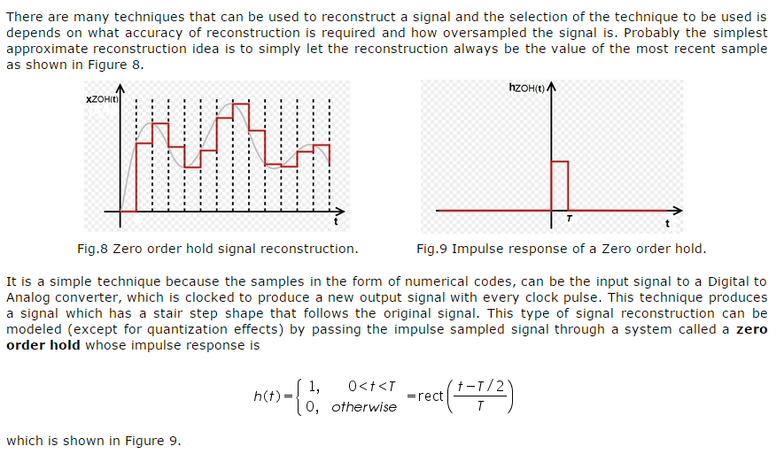
One popular way of further reducing the effects of the aliases is to follow the zero order hold with a practical lowpass filter that smooths out the steps caused by the zero order hold. The zero order hold causes a delay to the original signal because it is causal.
Another natural reconstruction idea is to interpolate between samples with straight lines as shown in Fig.10 below. This is obviously a better approximation of the original signal but it is a little harder to implement.
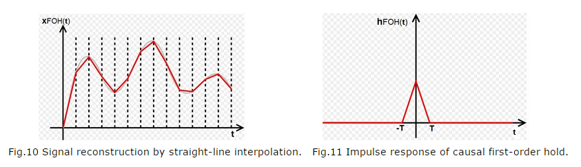
As shown in above figure the value of the interpolated signal at any time depends on the value of the previous sample and the value of the next sample and this is not possible in real time because the value of the next sample is not known in real time. But if we delay the reconstructed signal by one sample time T, we can make the reconstruction process causal and the reconstructed signal would appear as like the Figure 12.
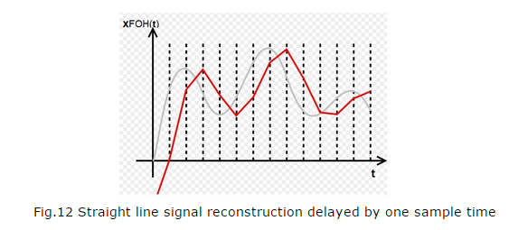
This interpolation can be accomplished by following the zero order hold by an identical zero order hold. This means that the impulse response of such a signal reconstruction filter would be the convolution of the zero order hold impulse response with itself
![«math xmlns=¨http://www.w3.org/1998/Math/MathML¨»«mi»h«/mi»«mo»(«/mo»«mi»t«/mi»«mo»)«/mo»«mo»=«/mo»«mi mathvariant=¨normal¨»rect«/mi»«mfenced»«mfrac»«mrow»«mi»t«/mi»«mo»-«/mo»«mi»T«/mi»«mo»/«/mo»«mn»2«/mn»«/mrow»«mi»T«/mi»«/mfrac»«/mfenced»«mo»*«/mo»«mo»§nbsp;«/mo»«mi mathvariant=¨normal¨»rect«/mi»«mfenced»«mfrac»«mrow»«mi»t«/mi»«mo»-«/mo»«mi»T«/mi»«mo»/«/mo»«mn»2«/mn»«/mrow»«mi»T«/mi»«/mfrac»«/mfenced»«mo»=«/mo»«mi mathvariant=¨normal¨»tri«/mi»«mfenced»«mfrac»«mrow»«mi»t«/mi»«mo»-«/mo»«mi»T«/mi»«/mrow»«mi»T«/mi»«/mfrac»«/mfenced»«/math»](images/showimage (27).png "Double click to edit") |
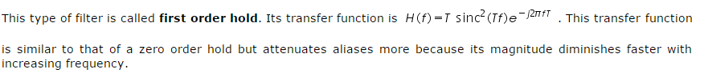
The discrete Fourier transform (DFT):
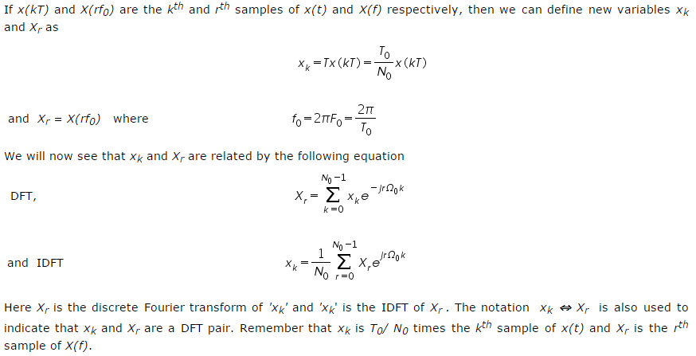
The numerical computation method yields only the uniform sample values of X(f) or x(t). Using this method is like viewing a signal and its spectrum through a "picket fence". The major peaks of X(f) or x(t) could lie between two samples and may remain hidden, there is a situation giving a false picture of the reality. Such misleading results can be avoided by using a sufficiently large 'N0' the no. of samples, which increases the resolution.
Observing Xr is like observing the spectrum X(f) through a "picket-fence". If the frequency sampling interval f0 is not sufficiently small, we could miss out some significant details and obtain a misleading picture. To obtain a higher number of samples, we need to reduce f0. Because f0 = 1/T0, a higher number of samples requires us to increase the value of 'T0' the period of repetition for x(t). This option increases 'N0' the number of samples of x(t), by adding samples with a value of 0. This addition of dummy samples is known as zero padding. zero padding increases the number of samples and it may help in getting a better idea of the spectrum X(f) from its samples Xr.
Properties of discrete Fourier transform:
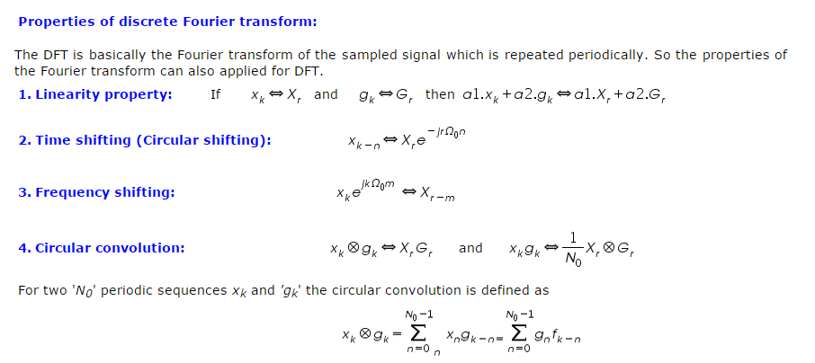
.